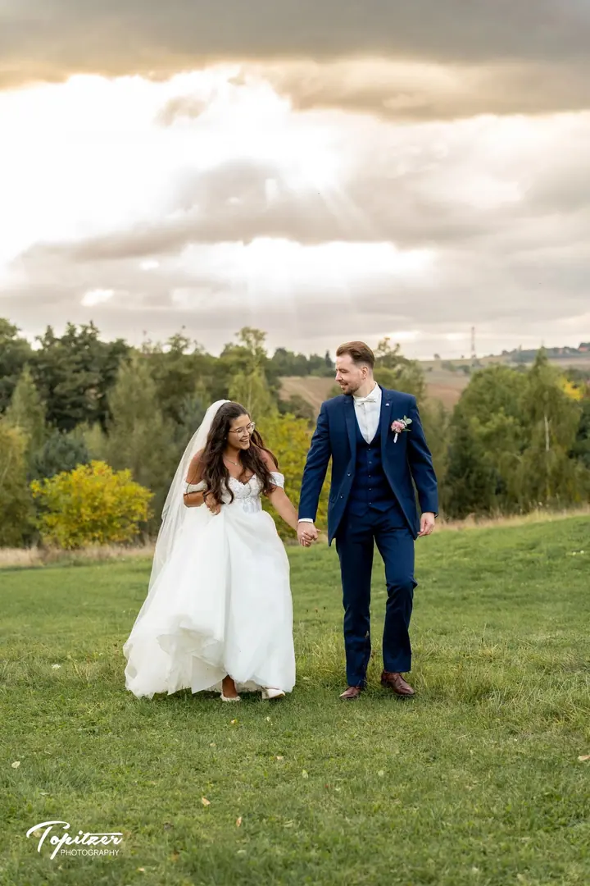
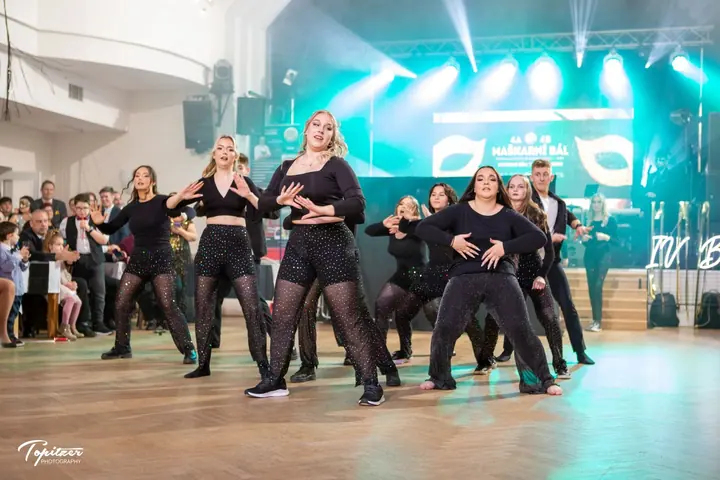

jedna
Svatby
Bude mi ctí být součástí vašeho svatebního dne. Fotím od příprav až po poslední tanec, nebo podle balíčku, který si vyberete.

Svatební fotograf a fotograf plesů · Ústecký kraj, celé Čechy

Jmenuji se Petr Topitzer a fotím svatby, maturitní plesy a portréty, hlavně v Ústeckém kraji. Fotka je pro mě způsob, jak vyprávět příběhy, a nejvíc mi záleží na dobré náladě a uvolněné atmosféře.
Více o mně
Co fotím
jedna
Bude mi ctí být součástí vašeho svatebního dne. Fotím od příprav až po poslední tanec, nebo podle balíčku, který si vyberete.
dvě
Fotím každý úsměv, předtančení i šerpování, abyste si ten večer pamatovali celý život. Plesy fotím ve spolupráci s agenturou Famous Agency.
tři
Fotím památku na vaši lásku, čekání na nového člena rodiny i portréty, na kterých budete sami sebou.

Ty nejlepší momenty se obvykle nedají naplánovat.


Za objektivem
Je mi 25 let a focení mě provází už od roku 2016. Kromě toho jsem tak trochu ajťák a na plný úvazek programuju, takže když zrovna nepíšu kód, mám v ruce foťák. Největší inspirací je pro mě můj malý syn. Každý den mi ukazuje, že ty nejlepší momenty se obvykle nedají naplánovat.
Už několik let spolupracuji s eventovou agenturou Famous Agency, se kterou fotím svatby, maturitní plesy i firemní akce. Mám za sebou spoustu zkušeností a pár nečekaných dobrodružství. Nebojím se zkusit nové věci ani skočit pro záběr tam, kam bych možná neměl.
S klienty si rozumím, protože věřím, že dobrá nálada dělá dobré fotky. Ať fotíme velký moment, nebo malý detail, chci, aby výsledek měl opravdovou atmosféru. A když si přejete víc než digitální galerii, můžeme vaše fotky uložit do ručně dělaného dřevěného alba od MyWoodstyle.cz.
Petr
Vyplníte kontaktní formulář a napíšete mi své představy. Co nejdřív se vám ozvu, probereme detaily a odpovím na vaše otázky.
Poznáme se osobně nebo online, podle toho, co vám víc vyhovuje. Společně projdeme balíčky a vyberete ten, který odpovídá vašim přáním.
Přijedu s dostatečným předstihem, prohlédnu si místo a připravím techniku. Fotím od příprav až po poslední tanec, případně podle zvolené varianty.
Všechny fotky projdu, vyberu a upravím. Hotové vám pošlu online, abyste se k nim mohli kdykoli vracet.
Portfolio
Otázky
Fotím převážně v Ústeckém kraji, ale rád za vámi přijedu kamkoli v Čechách.
Nebude. Snažím se, aby focení probíhalo v klidu a s dobrou náladou. Uvolnění se pak na fotkách krásně ukáže.
Všechny fotky projdu, upravím a pošlu vám je online. Pokud chcete něco hmatatelného, spolupracuji s MyWoodstyle.cz, kteří vyrábějí ručně dělaná dřevěná fotoalba na míru.
Ano. Už několik let spolupracuji s agenturou Famous Agency, se kterou fotím maturitní plesy, svatby i firemní akce po celé republice.